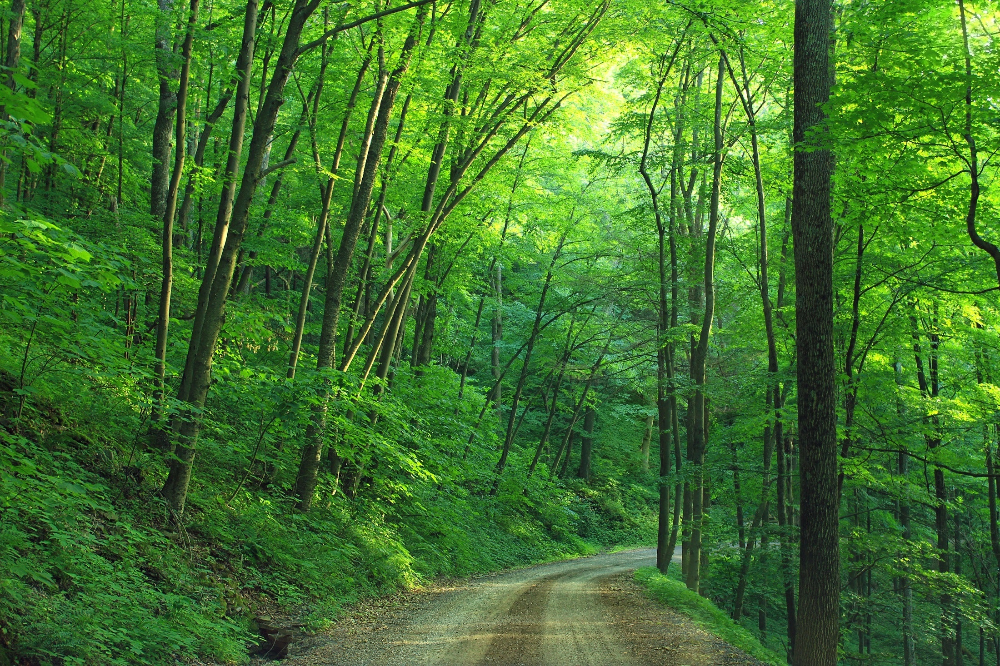

My Blog Page

By discovering nature, yyou discover yourself.

Look deep into nature,and you'll understand everything better. -Albert Einstein

Adapt the pace of nature. Her secret is patience. Ralph Waldo Emerson
We do not see nature with our eyes,but with our understandings and hearts. - William Hazlits